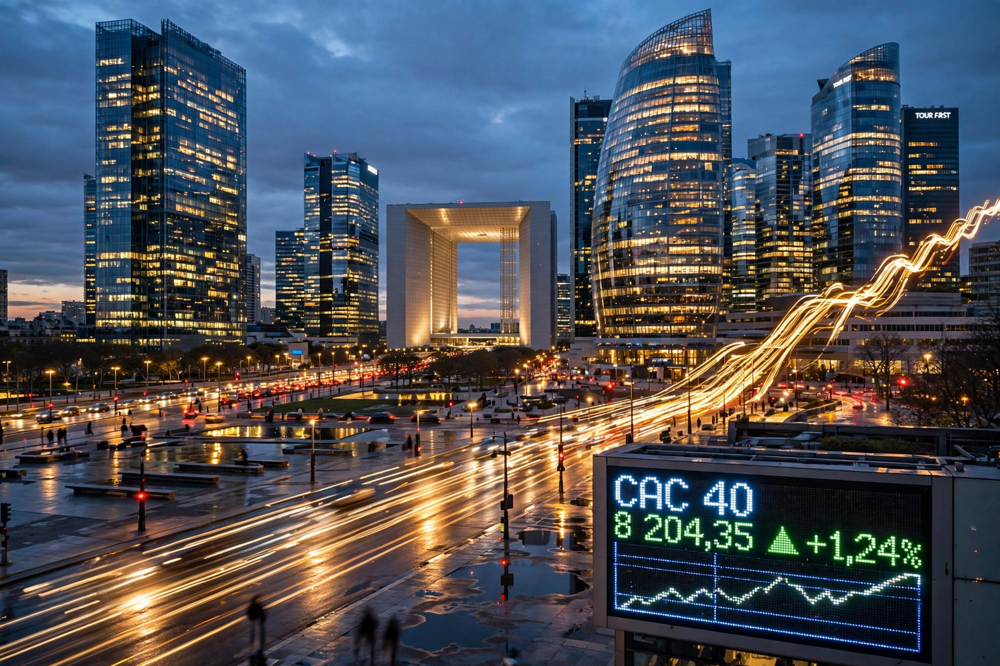

The CAC 40 (French: CAC quarante) is a benchmark French stock market index representing the 40 most significant stocks among the 100 largest market capitalisations on Euronext Paris. CAC originally stood for Compagnie des Agents de Change, later Cotation Assistée en Continu (continuous assisted trading).

Constituents are reviewed quarterly by an independent council. Major members have included luxury groups LVMH, Hermès and L'Oréal, energy company TotalEnergies, Airbus, BNP Paribas, Sanofi and Safran. Weighting is by free-float market capitalisation with a cap per issuer.
The index peaked around 6,922 during the dot-com boom in 2000, fell sharply in 2002–03 and during the 2008 financial crisis, and reached new records above 8,000 in the 2020s. A total-return version, CAC 40 GR, reinvests dividends.